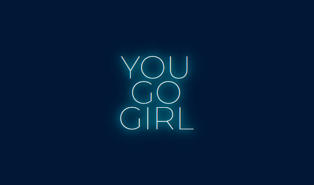
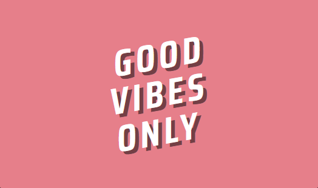
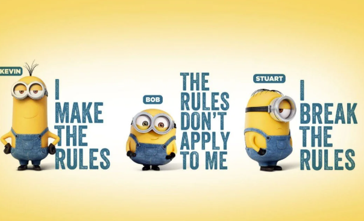
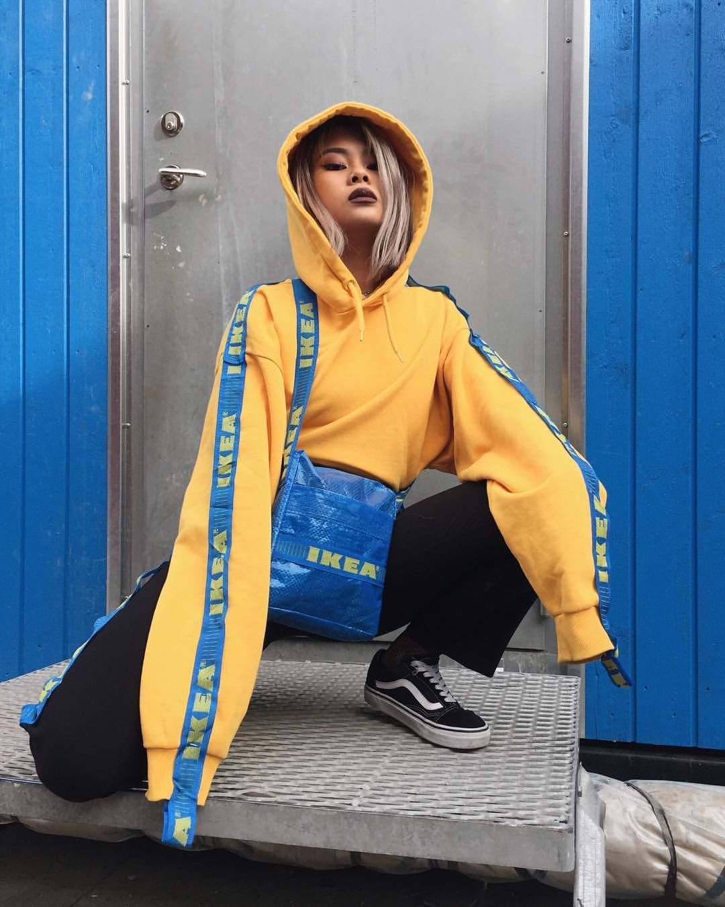
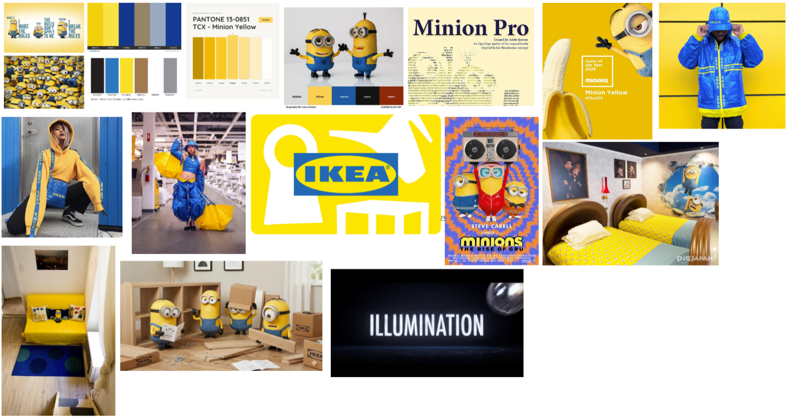
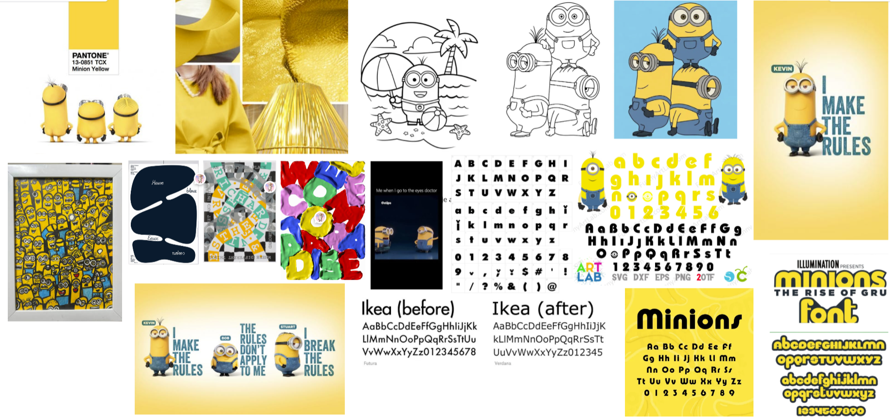

Project/ Concept 1: You Go Girl
Project/ Concept 2: Good Vibes OnlyAl mijn werk!
Een sectie voor al mijn recente projecten/ concepten!

Project/ Concept 3: Minions
Project/ Concept 4: IkeaDe model komt van de CMDA/model fork repository op GitHub.

Project/ Concept 1: You Go Girl
Project/ Concept 2: Good Vibes OnlyEen sectie voor al mijn recente projecten/ concepten!

Project/ Concept 3: Minions
Project/ Concept 4: IkeaHet eerste deel van mijn ontwerp bestaat uit de minions, vooral het Enthousiast & Opvallend aspect ervan, omdat de minions erg opvallen en kleurrijk zijn wil ik dat doormiddel van interactie terug laten komen op mijn website. Dit doe ik doormiddel van hovers, animaties en overgang (transistions) van elementen op mijn website, zo als de titel, kopjes, afbeeldingen, links en border lijnen.
Het tweede deel van mijn ontwerp bestaat uit de Ikea, vooral het Duidelijke &
Abstracte aspect ervan, omdat de kleuren van de Ikea goed passen bij de minions,
simpel uit te spreken is en visueel fijn om naar te kijken is heb ik mijn Digital Garden ook zo
vorm gegeven doormiddel van een zwart, witte achtergrond om een

Inspo 1Het eerste deel van mijn ontwerp bestaat uit de minions, vooral het Enthousiast & Opvallend aspect ervan, omdat de minions erg opvallen en kleurrijk zijn wil ik dat doormiddel van interactie terug laten komen op mijn website. Dit doe ik doormiddel van hovers, animaties en overgang (transistions) van elementen op mijn website, zo als de titel, kopjes, afbeeldingen, links en border lijnen.
Het tweede deel van mijn ontwerp bestaat uit de Ikea, vooral het Duidelijke &
Abstracte aspect ervan, omdat de kleuren van de Ikea goed passen bij de minions,
simpel uit te spreken is en visueel fijn om naar te kijken is heb ik mijn Digital Garden ook zo
vorm gegeven doormiddel van een zwart, witte achtergrond om een

Inspo 2@Copyright since 2026 - all rights belong to Twan Eekhout